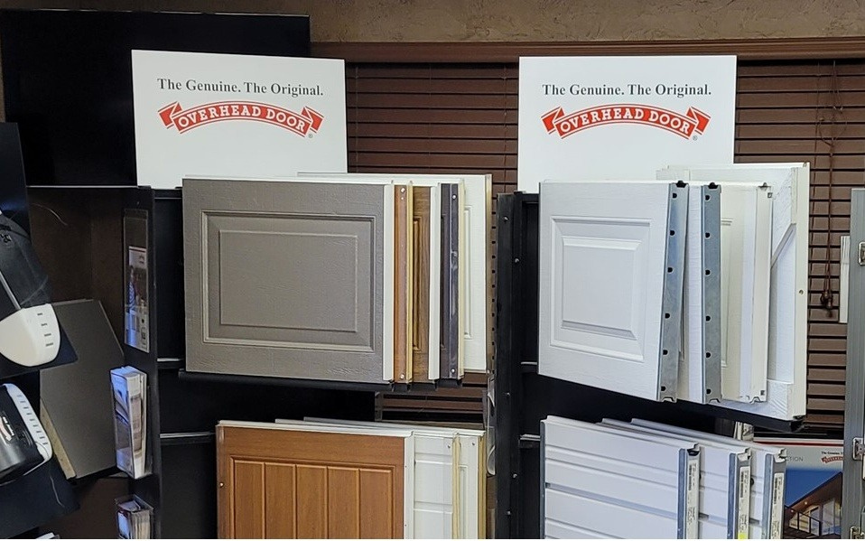

A local service team
Locally owned and operated, with staff and technicians serving the communities around Amarillo.
Talk to the teamWe’ve served the Texas Panhandle since 1968, with an Amarillo showroom, service department, and residential and commercial crews.

We’ve served Amarillo and the Texas Panhandle since 1968. Visit our showroom, talk through a project, or get help with a door you already own.
Locally owned and operated, with staff and technicians serving the communities around Amarillo.
Talk to the teamDoor, operator, and access solutions for homes, businesses, and industrial projects.
Explore what we doAn authorized Ribbon distributor for the Overhead Door brand, with service for most other makes and models.
Find serviceFounded by Norris “Dub” Elston, our family-owned company grew around residential and commercial door service in the Texas Panhandle.
Our 12,000-square-foot facility supports inventory, parts, and a showroom where you can compare doors, openers, and accessories in person.
Visit the showroomOur service team carries parts and accessories for many door and operator brands. We also stock inventory for installation and public sales.
Ask about a partOur residential and commercial technicians have the tools and office support to prepare proposals and explain the work.
Assess repair vs replacementWe maintain liability, workers’ compensation, facility, and service vehicle insurance. Ask our office for project-specific documentation.
Review company FAQTell us what you need. Our Amarillo team will take it from there.